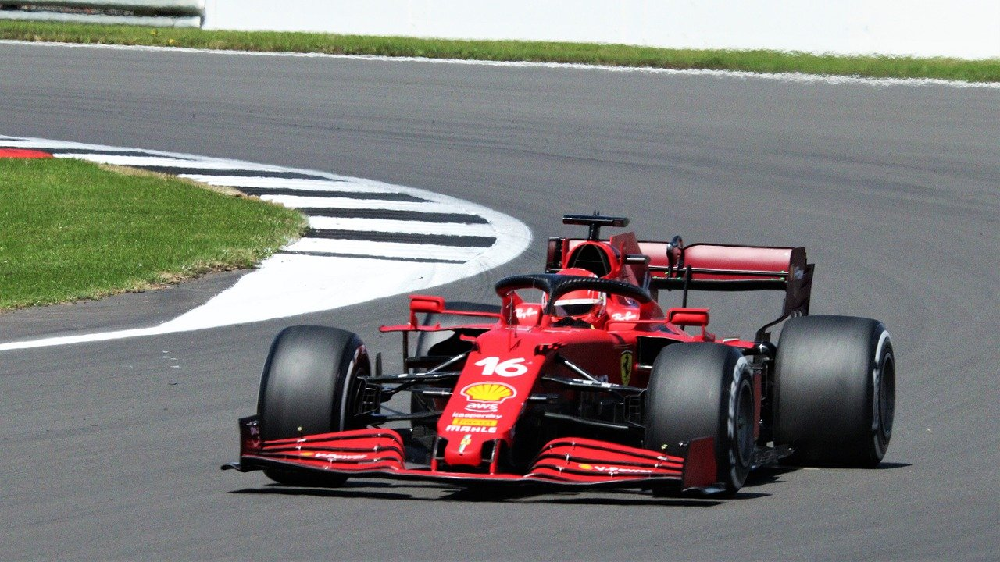
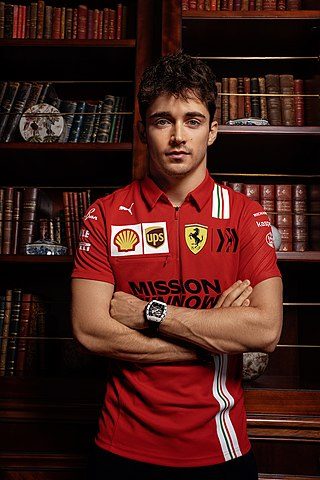
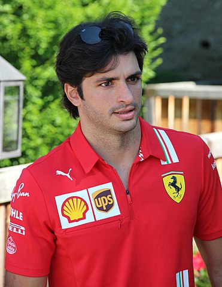

Scuderia Ferrari

Scuderia Ferrari S.p.A. (Italian: [skudeˈriːa ferˈraːri]) is the racing division of luxury Italian auto
manufacturer Ferrari and the racing team that competes in Formula One racing. The team is also nicknamed
"The Prancing Horse", in reference to their logo. It is the oldest surviving and most successful Formula
One team, having competed in every world championship since the 1950 Formula One season.[6] The team was
founded by Enzo Ferrari, initially to race cars produced by Alfa Romeo, though by 1947 Ferrari had begun
building its own cars. Among its important achievements outside Formula One are winning the World
Sportscar Championship, 24 Hours of Le Mans, 24 Hours of Spa, 24 Hours of Daytona, 12 Hours of Sebring,
Bathurst 12 Hour, races for Grand tourer cars and racing on road courses of the Targa Florio, the Mille
Miglia and the Carrera Panamericana. The team is also known for its passionate support base, known as
the tifosi. The Italian Grand Prix at Monza is regarded as the team's home race.
read more....
Drivers

Charles Leclerc
Charles Marc Hervé Perceval Leclerc[3] (French pronunciation: [ʃaʁl ləklɛʁ]; born 16 October 1997) is a
Monégasque racing driver, currently racing in Formula One for Scuderia Ferrari. Leclerc won the GP3
Series championship in 2016 and the FIA Formula 2 Championship in 2017.
Leclerc made his Formula One debut in 2018 for Sauber, a team affiliated with Ferrari, for which he was
part of the Ferrari Driver Academy. With Sauber having finished last the year before, Leclerc led the
charge to improve its finishing position in the constructors' championship to eighth, and was the higher
ranked of the two Sauber drivers.
Starting in 2019 and contracted until the end of the 2024 season, Leclerc drives for Ferrari. He became
the second-youngest driver to qualify on pole position in Formula One at the 2019 Bahrain Grand Prix.
The 2019 season also saw Leclerc take his first career win in Belgium. He won the Pole Trophy in the
2019 season, becoming the youngest driver to win it.
read more...
Drivers

Carlos Sainz
Carlos Sainz Vázquez de Castro (Spanish pronunciation: [ˈkaɾlos ˈsajnθ ˈβaθkeθ ðe ˈkastɾo] (audio
speaker iconlisten); born 1 September 1994), otherwise known as Carlos Sainz Jr. or simply Carlos
Sainz[a], is a Spanish racing driver competing in Formula One for Scuderia Ferrari. He is the son of
Carlos Sainz, a double World Rally Champion, and the nephew of rally driver Antonio Sainz.[3][4][5][6]
In 2012, Sainz raced in the British and European Formula 3 championships for Carlin.[7] He raced for
DAMS in the 2014 Formula Renault 3.5 season, winning the championship before moving to F1 with Toro
Rosso.[8] Sainz moved to McLaren for the 2019 season, while at the same time ending his contract with
Red Bull Racing. At the 2019 Brazilian Grand Prix Sainz took his maiden Formula One podium finish with
third. Sainz moved to Ferrari at the end of the 2020 season.
read more...